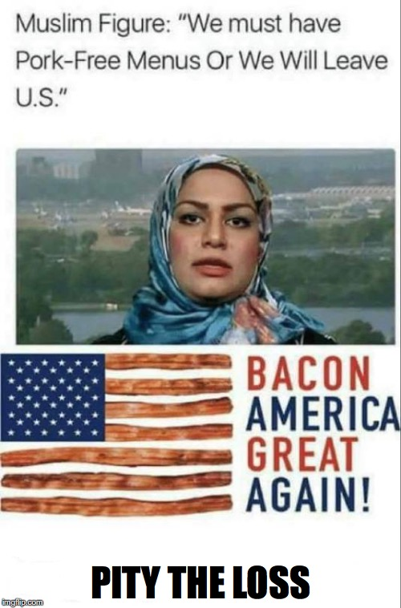

Some pro-Trump and far-right memes from the 2016 election period portrayed immigrants, Muslims, and other minority groups as threats to the country or as people making unreasonable demands. These images often used a simple joke or exaggerated situation to encourage viewers to see a whole group as a problem.
One archived meme shows a Muslim figure asking for pork-free menus. The joke presents Muslim religious practice as an unfair demand imposed on everyone else. The image is an example of anti-Muslim stereotyping; it does not establish that the event shown actually happened.
Other images in the archive use Pepe with racist or antisemitic imagery, or include language that excludes people based on ethnicity. Pepe itself is not inherently hateful, but some online communities adapted the character for bigoted political messages. The meaning changes with the specific image, caption, and symbols used.
Memes in this entry
The images below show examples connected to this topic, with links to their recorded sources and additional item details.

MEME_US2016_011
ARCHIVE ITEM · MEME_US2016_011
Muslim Figure: “We must have Pork-Free Menus Or We Will Leave U.S.” PITY THE LOSS
The archived caption depicts Muslims as demanding pork-free menus. The archive summary describes this as framing Muslims as a threat; the depicted scenario is not independently verified here.
Muslim Figure: “We must have Pork-Free Menus Or We Will Leave U.S.” PITY THE LOSS
Context summary
A MAGA meme portrays Muslims as demanding pork-free menus and frames exclusion from U.S. society as desirable, invoking nationalist and anti-Muslim rhetoric.
There can never be peace in fashy goy land until the foreign, oppressive normie presence is removed, leaving all the fashy goys as a unit to control their own affairs and determine their own destinies as a sovereign people, free in mind and body, separate and distinct physically, culturally and economically — The Right Stuff, 2012
Context summary
A propagandistic poster frames an exclusionary political community as sovereign and culturally distinct, drawing on language associated with the far-right blog The Right Stuff.